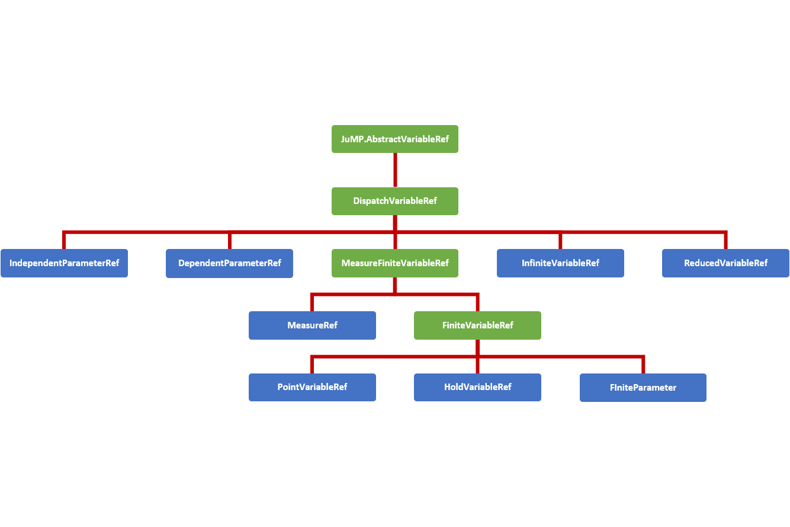

Expressions
A guide for the defining and understanding the variable expressions used in InfiniteOpt.
Overview
Expressions in InfiniteOpt (also called functions) refer to mathematical statements involving variables and numbers. Thus, these comprise the mathematical expressions used that are used in measures, objectives, and constraints. Programmatically, InfiniteOpt simply extends JuMP expression types and methods principally pertaining to affine and quadratic mathematical expressions. A natively supported abstraction for general nonlinear expressions is planned for development since that of JuMP is not readily extendable.
Variable Hierarchy
Expressions employ variable reference types inherited from JuMP.AbstractVariableRef to form expression objects. InfiniteOpt uses a hierarchy of such types to organize the complexities associated with modeling infinite dimensional programs. The figure below summarizes this hierarchy of variable reference types where the abstract types are depicted in green and the concrete types are shown blue.

In consistently with JuMP expression support, GeneralVariableRef exists as a variable reference type that is able to represent any of the above conrete subtypes of DispatchVariableRef. This allows the expression containers to be homogeneous in variable type. This is a paradigm shift from previous versions of InfiniteOpt that used the hierarchy of types directly to construct expressions. This behavior led to stability and performance limitations and thus a has been discontinued.
However, the variable hierarchy is still used to create for variable methods. To accomplish this appropriate GeneralVariableRef dispatch methods are implemented (which are detailed in User Methods section at the bottom of this page) that utilize dispatch_variable_ref to create the appropriate concrete subtype of DispatchVariableRef and call the appropriate underlying method. These dispatch methods have been implemented for all public methods and the underlying methods are what are documented in the method manuals throughout the User Guide pages.
Affine Expressions
An affine expression pertains to a mathematical function of the form:
where $x \in \mathbb{R}^n$ denote variables, $a \in \mathbb{R}^n$ denote coefficients, and $b \in \mathbb{R}$ denotes a constant value. Such expressions, are prevalent in any problem than involves linear constraints and/or objectives.
In InfiniteOpt, affine expressions can be defined directly using Julia's arithmetic operators (i.e., +, -, *, etc.) or using @expression. For example, let's define the expression $2y(t) + z - 3t$ noting that the following methods are equivalent:
julia> @infinite_parameter(model, t in [0, 10])
t
julia> @infinite_variable(model, y(t))
y(t)
julia> @hold_variable(model, z)
z
julia> expr = 2y + z - 3t
2 y(t) + z - 3 t
julia> expr = 2 * y + z - 3 * t
2 y(t) + z - 3 t
julia> expr = @expression(model, 2y + z - 3t)
2 y(t) + z - 3 t
julia> typeof(expr)
GenericAffExpr{Float64,GeneralVariableRef}Notice that coefficients to variables can simply be put alongside variables without having to use the * operator. Also, note that all of these expressions are stored in a container referred to as a GenericAffExpr which is a JuMP object for storing affine expressions.
Where possible, it is preferable to use @expression for defining expressions as it is much more efficient than explicitly using the standard operators.
GenericAffExpr objects contain 2 fields which are:
constant::CoefTypeThe constant value of the affine expression.terms::OrderDict{VarType, CoefType}A dictionary mapping variables to coefficients.
For example, let's see what these fields look like in the above example:
julia> expr.terms
OrderedCollections.OrderedDict{GeneralVariableRef,Float64} with 3 entries:
y(t) => 2.0
z => 1.0
t => -3.0
julia> expr.constant
0.0Notice that the ordered dictionary preserves the order in which the variables appear in the expression.
More information can be found in the documentation for affine expressions in JuMP.
Quadratic Expressions
A quadratic function pertains to a mathematical function of the form:
where $x \in \mathbb{R}^n$ are the variables, $f_a(x): \mathbb{R}^n \mapsto \mathbb{R}$ is an affine function, and $m = n(n+1)/2$ is the number of unique combinations of variables $x$. Like affine expressions, quadratic expressions can be defined via Julia's arithmetic operators or via @expression. For example, let's define $2y^2(t) - zy(t) + 42t - 3$ using the following equivalent methods:
julia> expr = 2y^2 - z * y + 42t - 3
2 y(t)² - z*y(t) + 42 t - 3
julia> expr = @expression(model, 2y^2 - z * y + 42t - 3)
2 y(t)² - y(t)*z + 42 t - 3
julia> typeof(expr)
GenericQuadExpr{Float64,GeneralVariableRef}Again, notice that coefficients need not employ *. Also, the object used to store the expression is a GenericQuadExpr which is a JuMP object used for storing quadratic expressions.
GenericQuadExpr object contains 2 data fields which are:
aff::GenericAffExpr{CoefType,VarType}An affine expressionterms::OrderedDict{UnorderedPair{VarType}, CoefType}A dictionary mapping quadratic variable pairs to coefficients.
Here the UnorderedPair type is unique to JuMP and contains the fields:
a::AbstractVariableRefOne variable in a quadratic pairb::AbstractVariableRefThe other variable in a quadratic pair.
Thus, this form can be used to store arbitrary quadratic expressions. For example, let's look at what these fields look like in the above example:
julia> expr.aff
42 t - 3
julia> typeof(expr.aff)
GenericAffExpr{Float64,GeneralVariableRef}
julia> expr.terms
OrderedCollections.OrderedDict{UnorderedPair{GeneralVariableRef},Float64} with 2 entries:
UnorderedPair{GeneralVariableRef}(y(t), y(t)) => 2.0
UnorderedPair{GeneralVariableRef}(y(t), z) => -1.0Notice again that the ordered dictionary preserves the order.
Polynomial expressions can be represented by introducing dumby variables and nested quadratic/affine expressions. For instance, $z^3 + 2$ can be expressed by introducing a dumby variable $x = z^2$:
julia> @hold_variable(model, x)
x
julia> @constraint(model, x == z^2)
-z² + x = 0.0
julia> expr = @expression(model, z * x + 2)
z*x + 2More information can be found in the documentation for quadratic expressions in JuMP.
Nonlinear Expressions
General nonlinear expressions as generated via @NLexpression and similar methods in JuMP are not yet extended for InfiniteOpt. This is because JuMP does not readily support nonlinear extensions, but a native nonlinear implementation is planned for development and should be released in the relatively near future.
DataTypes
InfiniteOpt.DispatchVariableRefInfiniteOpt.FiniteVariableRefInfiniteOpt.GeneralVariableRefInfiniteOpt.MeasureFiniteVariableRef
InfiniteOpt.GeneralVariableRef — TypeGeneralVariableRef <: JuMP.AbstractVariableRefA DataType that serves as the principal variable reference in InfiniteOpt for building variable expressions. It contains the needed information to create a variable type specifc reference (e.g., InfiniteVariableRef) via dispatch_variable_ref to obtain the correct subtype of DispatchVariableRef based off of index_type. This allows us to construct expressions using concrete containers unlike previous versions of InfiniteOpt which provides us a significant performance boost.
Fields
model::InfiniteModel: Infinite model.raw_index::Int: The raw index to be used in theindex_typeconstructor.index_type::DataType: The concreteAbstractInfOptIndextype/constructor.param_index::Int: The index of a parameter inDependentParameters. This is ignored for other variable types.
InfiniteOpt.DispatchVariableRef — TypeDispatchVariableRef <: JuMP.AbstractVariableRefAn abstract type for variable references that are created from GeneralVariableRefs and are used to dispatch to the appropriate methods for that particular variable/parameter/measure type.
InfiniteOpt.MeasureFiniteVariableRef — TypeMeasureFiniteVariableRef <: DispatchVariableRefAn abstract type to define finite variable and measure references.
InfiniteOpt.FiniteVariableRef — TypeFiniteVariableRef <: MeasureFiniteVariableRefAn abstract type to define new finite variable references.
Expression Methods
InfiniteOpt.parameter_refs — Methodparameter_refs(expr)::TupleReturn the tuple of infinite parameter references that determine the infinite dependencies of expr.
Example
julia> parameter_refs(my_expr)
(t,)GeneralVariableRef User Methods
InfiniteOpt._add_data_objectInfiniteOpt._constraint_dependenciesInfiniteOpt._constraint_dependenciesInfiniteOpt._core_variable_objectInfiniteOpt._core_variable_objectInfiniteOpt._data_dictionaryInfiniteOpt._data_objectInfiniteOpt._delete_data_objectInfiniteOpt._infinite_variable_dependenciesInfiniteOpt._infinite_variable_dependenciesInfiniteOpt._measure_dependenciesInfiniteOpt._measure_dependenciesInfiniteOpt._object_numberInfiniteOpt._object_numberInfiniteOpt._parameter_numberInfiniteOpt._parameter_numberInfiniteOpt._point_variable_dependenciesInfiniteOpt._point_variable_dependenciesInfiniteOpt._reduced_variable_dependenciesInfiniteOpt._reduced_variable_dependenciesInfiniteOpt._set_core_variable_objectInfiniteOpt.add_parameter_boundsInfiniteOpt.add_supportsInfiniteOpt.add_supportsInfiniteOpt.delete_parameter_boundsInfiniteOpt.delete_supportsInfiniteOpt.delete_supportsInfiniteOpt.dispatch_variable_refInfiniteOpt.dispatch_variable_refInfiniteOpt.eval_supportsInfiniteOpt.fill_in_supports!InfiniteOpt.fill_in_supports!InfiniteOpt.has_parameter_boundsInfiniteOpt.has_supportsInfiniteOpt.has_supportsInfiniteOpt.infinite_setInfiniteOpt.infinite_setInfiniteOpt.infinite_variable_refInfiniteOpt.is_analyticInfiniteOpt.is_usedInfiniteOpt.measure_dataInfiniteOpt.measure_functionInfiniteOpt.num_supportsInfiniteOpt.num_supportsInfiniteOpt.parameter_boundsInfiniteOpt.parameter_listInfiniteOpt.parameter_refsInfiniteOpt.parameter_refsInfiniteOpt.parameter_valueInfiniteOpt.parameter_valuesInfiniteOpt.raw_parameter_refsInfiniteOpt.raw_parameter_valuesInfiniteOpt.reset_start_value_functionInfiniteOpt.set_infinite_setInfiniteOpt.set_infinite_setInfiniteOpt.set_parameter_boundsInfiniteOpt.set_start_value_functionInfiniteOpt.set_supportsInfiniteOpt.set_supportsInfiniteOpt.significant_digitsInfiniteOpt.start_value_functionInfiniteOpt.supportsInfiniteOpt.supportsInfiniteOpt.used_by_constraintInfiniteOpt.used_by_infinite_variableInfiniteOpt.used_by_measureInfiniteOpt.used_by_objectiveInfiniteOpt.used_by_point_variableJuMP.BinaryRefJuMP.FixRefJuMP.IntegerRefJuMP.LowerBoundRefJuMP.UpperBoundRefJuMP.deleteJuMP.deleteJuMP.delete_lower_boundJuMP.delete_upper_boundJuMP.fixJuMP.fix_valueJuMP.has_lower_boundJuMP.has_upper_boundJuMP.indexJuMP.indexJuMP.is_binaryJuMP.is_fixedJuMP.is_integerJuMP.is_validJuMP.is_validJuMP.lower_boundJuMP.nameJuMP.owner_modelJuMP.owner_modelJuMP.set_binaryJuMP.set_integerJuMP.set_lower_boundJuMP.set_nameJuMP.set_start_valueJuMP.set_upper_boundJuMP.set_valueJuMP.start_valueJuMP.unfixJuMP.unset_binaryJuMP.unset_integerJuMP.upper_bound
JuMP.owner_model — MethodJuMP.owner_model(vref::GeneralVariableRef)::InfiniteModelExtend JuMP.owner_model to return the model where vref is stored.
Example
julia> owner_model(vref)
An InfiniteOpt Model
Feasibility problem with:
Finite Parameters: 0
Infinite Parameters: 0
Variable: 1
Measures: 0
`HoldVariableRef`-in-`MathOptInterface.GreaterThan{Float64}`: 1 constraint
`HoldVariableRef`-in-`MathOptInterface.LessThan{Float64}`: 1 constraint
Names registered in the model: vref
Optimizer model backend information:
Model mode: AUTOMATIC
CachingOptimizer state: NO_OPTIMIZER
Solver name: No optimizer attached.JuMP.owner_model — MethodJuMP.owner_model(vref::DispatchVariableRef)::InfiniteModelExtend JuMP.owner_model to return the model where vref is stored.
JuMP.index — MethodJuMP.index(vref::GeneralVariableRef)::AbstractInfOptIndexExtend JuMP.index to return the appropriate index of vref.
Example
julia> index(vref)
HoldVariableIndex(1)JuMP.index — MethodJuMP.index(vref::DispatchVariableRef)::AbstractInfOptIndexExtend JuMP.index to return the appropriate index of vref.
InfiniteOpt.dispatch_variable_ref — Methoddispatch_variable_ref(vef::GeneralVariableRef)::DispatchVariableRefReturn the concrete DispatchVariableRef this associated with vref. This relies on dispatch_variable_ref being extended for the index type, otherwise an MethodError is thrown.
InfiniteOpt.dispatch_variable_ref — Functiondispatch_variable_ref(model::InfiniteModel, index::AbstractInfOptIndex)Return the variable reference associated the type of index. This needs to be defined for each variable reference type.
JuMP.name — MethodJuMP.name(vref::GeneralVariableRef)::StringExtend JuMP.name to return the name of vref. It relies on JuMP.name being defined for the underlying DispatchVariableRef, otherwise an ArugmentError is thrown.
JuMP.set_name — MethodJuMP.set_name(vref::GeneralVariableRef, name::String)::NothingExtend JuMP.set_name to set the name of vref. It relies on JuMP.set_name being defined for the underlying DispatchVariableRef, otherwise an ArugmentError is thrown.
JuMP.is_valid — MethodJuMP.is_valid(model::InfiniteModel, vref::GeneralVariableRef)::BoolExtend JuMP.is_valid to return Bool if vref is a valid reference.
Example
julia> is_valid(model, vref)
trueJuMP.is_valid — MethodJuMP.is_valid(model::InfiniteModel, vref::DispatchVariableRef)::BoolExtend JuMP.is_valid to return Bool if vref is a valid reference.
InfiniteOpt.used_by_infinite_variable — MethodInfiniteOpt.used_by_infinite_variable(vref::GeneralVariableRef)::BoolDefine InfiniteOpt.used_by_infinite_variable for general variable references. It relies on InfiniteOpt.used_by_infinite_variable being defined for the underlying DispatchVariableRef, otherwise an ArugmentError is thrown. See the underlying docstrings for more information.
InfiniteOpt.used_by_point_variable — MethodInfiniteOpt.used_by_point_variable(vref::GeneralVariableRef)::BoolDefine InfiniteOpt.used_by_point_variable for general variable references. It relies on InfiniteOpt.used_by_point_variable being defined for the underlying DispatchVariableRef, otherwise an ArugmentError is thrown. See the underlying docstrings for more information.
InfiniteOpt.used_by_measure — MethodInfiniteOpt.used_by_measure(vref::GeneralVariableRef)::BoolDefine InfiniteOpt.used_by_measure for general variable references. It relies on InfiniteOpt.used_by_measure being defined for the underlying DispatchVariableRef, otherwise an ArugmentError is thrown. See the underlying docstrings for more information.
InfiniteOpt.used_by_objective — MethodInfiniteOpt.used_by_objective(vref::GeneralVariableRef)::BoolDefine InfiniteOpt.used_by_objective for general variable references. It relies on InfiniteOpt.used_by_objective being defined for the underlying DispatchVariableRef, otherwise an ArugmentError is thrown. See the underlying docstrings for more information.
InfiniteOpt.used_by_constraint — MethodInfiniteOpt.used_by_constraint(vref::GeneralVariableRef)::BoolDefine InfiniteOpt.used_by_constraint for general variable references. It relies on InfiniteOpt.used_by_constraint being defined for the underlying DispatchVariableRef, otherwise an ArugmentError is thrown. See the underlying docstrings for more information.
InfiniteOpt.is_used — MethodInfiniteOpt.is_used(vref::GeneralVariableRef)::BoolDefine InfiniteOpt.is_used for general variable references. It relies on InfiniteOpt.is_used being defined for the underlying DispatchVariableRef, otherwise an ArugmentError is thrown. See the underlying docstrings for more information.
InfiniteOpt.parameter_value — MethodInfiniteOpt.parameter_value(prefs; [kwargs...])Define InfiniteOpt.parameter_value for general variable references. It relies on InfiniteOpt.parameter_value being defined for the underlying DispatchVariableRef, otherwise an ArugmentError is thrown. See the underlying docstrings for more information. Note that this is a auto generated wrapper and the underlying method may or may not use kwargs.
JuMP.set_value — MethodJuMP.set_value(vref::DispatchVariableRef, value::Real)::NothingExtend JuMP.set_value to set the value of vref. It relies on JuMP.set_value being defined for the underlying DispatchVariableRef, otherwise an ArugmentError is thrown.
InfiniteOpt.infinite_set — MethodInfiniteOpt.infinite_set(prefs; [kwargs...])Define InfiniteOpt.infinite_set for general variable references. It relies on InfiniteOpt.infinite_set being defined for the underlying DispatchVariableRef, otherwise an ArugmentError is thrown. See the underlying docstrings for more information. Note that this is a auto generated wrapper and the underlying method may or may not use kwargs.
InfiniteOpt.infinite_set — MethodInfiniteOpt.infinite_set(prefs; [kwargs...])Define InfiniteOpt.infinite_set for general variable references. It relies on InfiniteOpt.infinite_set being defined for the underlying DispatchVariableRef, otherwise an ArugmentError is thrown. See the underlying docstrings for more information. Note that this is a auto generated wrapper and the underlying method may or may not use kwargs.
InfiniteOpt.set_infinite_set — Methodset_infinite_set(pref::GeneralVariableRef, set::InfiniteScalarSet)::NothingSpecify the scalar infinite set of the infinite parameter pref to set. Note this will reset/delete all the supports contained in the underlying parameter object. Also, errors if pref is used by a measure. An ArgumentError is thrown if pref is not an infinite parameter.
InfiniteOpt.set_infinite_set — Methodset_infinite_set(prefs::AbstractArray{<:GeneralVariableRef},
set::InfiniteArraySet)::NothingSpecify the multi-dimensional infinite set of the dependent infinite parameters prefs to set. Note this will reset/delete all the supports contained in the underlying DependentParameters object. This will error if the not all of the dependent infinite parameters are included or if any of them are used by measures. An ArgumentError is thrown if prefs are not dependent infinite parameters.
InfiniteOpt.num_supports — MethodInfiniteOpt.num_supports(prefs; [kwargs...])Define InfiniteOpt.num_supports for general variable references. It relies on InfiniteOpt.num_supports being defined for the underlying DispatchVariableRef, otherwise an ArugmentError is thrown. See the underlying docstrings for more information. Note that this is a auto generated wrapper and the underlying method may or may not use kwargs.
InfiniteOpt.num_supports — MethodInfiniteOpt.num_supports(prefs; [kwargs...])Define InfiniteOpt.num_supports for general variable references. It relies on InfiniteOpt.num_supports being defined for the underlying DispatchVariableRef, otherwise an ArugmentError is thrown. See the underlying docstrings for more information. Note that this is a auto generated wrapper and the underlying method may or may not use kwargs.
InfiniteOpt.has_supports — MethodInfiniteOpt.has_supports(prefs; [kwargs...])Define InfiniteOpt.has_supports for general variable references. It relies on InfiniteOpt.has_supports being defined for the underlying DispatchVariableRef, otherwise an ArugmentError is thrown. See the underlying docstrings for more information. Note that this is a auto generated wrapper and the underlying method may or may not use kwargs.
InfiniteOpt.has_supports — MethodInfiniteOpt.has_supports(prefs; [kwargs...])Define InfiniteOpt.has_supports for general variable references. It relies on InfiniteOpt.has_supports being defined for the underlying DispatchVariableRef, otherwise an ArugmentError is thrown. See the underlying docstrings for more information. Note that this is a auto generated wrapper and the underlying method may or may not use kwargs.
InfiniteOpt.supports — Methodsupports(expr::JuMP.AbstractJuMPScalar; [kwargs...])Return the support associated with expr. Errors if expr is not associated with the constraint mappings stored in optimizer_model or if InfiniteOpt.expression_supports has not been extended. By default, no keyword arguments are accepted, but extensions may employ some.
Example
julia> supports(cref)
2-element Array{Tuple{Float64},1}:
(0.0,)
(1.0,)InfiniteOpt.supports(prefs; [kwargs...])Define InfiniteOpt.supports for general variable references. It relies on InfiniteOpt.supports being defined for the underlying DispatchVariableRef, otherwise an ArugmentError is thrown. See the underlying docstrings for more information. Note that this is a auto generated wrapper and the underlying method may or may not use kwargs.
InfiniteOpt.supports — MethodInfiniteOpt.supports(prefs; [kwargs...])Define InfiniteOpt.supports for general variable references. It relies on InfiniteOpt.supports being defined for the underlying DispatchVariableRef, otherwise an ArugmentError is thrown. See the underlying docstrings for more information. Note that this is a auto generated wrapper and the underlying method may or may not use kwargs.
InfiniteOpt.set_supports — Methodset_supports(pref::GeneralVariableRef, supports::Union{Real, Vector{<:Real}};
[force::Bool = false])::NothingSet the support points associated with a single infinite parameter pref. An ArgumentError is thrown if pref is not an independent infinite parameter.
InfiniteOpt.set_supports — Methodset_supports(
prefs::Union{Vector{GeneralVariableRef}, AbstractArray{<:GeneralVariableRef}},
supports::Union{Array{<:Real, 2}, AbstractArray{<:Vector{<:Real}}};
[force::Bool = false]
)::NothingSet the support points associated with dependent infinite parameters prefs. An ArgumentError is thrown if prefs is are not dependent infinite parameters.
InfiniteOpt.add_supports — Methodadd_supports(pref::GeneralVariableRef,
supports::Union{Real, Vector{<:Real}})::NothingAdd the support points supports to a single infinite parameter pref. An ArgumentError is thrown if pref is not an independent infinite parameter.
InfiniteOpt.add_supports — Methodadd_supports(
prefs::Union{Vector{GeneralVariableRef}, AbstractArray{<:GeneralVariableRef}},
supports::Union{Array{<:Real, 2}, AbstractArray{<:Vector{<:Real}}}
)::NothingAdd the support points supports to the dependent infinite parameters prefs. An ArgumentError is thrown if prefs is are not dependent infinite parameters.
InfiniteOpt.delete_supports — MethodInfiniteOpt.delete_supports(prefs; [kwargs...])Define InfiniteOpt.delete_supports for general variable references. It relies on InfiniteOpt.delete_supports being defined for the underlying DispatchVariableRef, otherwise an ArugmentError is thrown. See the underlying docstrings for more information. Note that this is a auto generated wrapper and the underlying method may or may not use kwargs.
InfiniteOpt.delete_supports — MethodInfiniteOpt.delete_supports(prefs; [kwargs...])Define InfiniteOpt.delete_supports for general variable references. It relies on InfiniteOpt.delete_supports being defined for the underlying DispatchVariableRef, otherwise an ArugmentError is thrown. See the underlying docstrings for more information. Note that this is a auto generated wrapper and the underlying method may or may not use kwargs.
InfiniteOpt.fill_in_supports! — MethodInfiniteOpt.fill_in_supports!(prefs; [kwargs...])Define InfiniteOpt.fill_in_supports! for general variable references. It relies on InfiniteOpt.fill_in_supports! being defined for the underlying DispatchVariableRef, otherwise an ArugmentError is thrown. See the underlying docstrings for more information. Note that this is a auto generated wrapper and the underlying method may or may not use kwargs.
InfiniteOpt.fill_in_supports! — MethodInfiniteOpt.fill_in_supports!(prefs; [kwargs...])Define InfiniteOpt.fill_in_supports! for general variable references. It relies on InfiniteOpt.fill_in_supports! being defined for the underlying DispatchVariableRef, otherwise an ArugmentError is thrown. See the underlying docstrings for more information. Note that this is a auto generated wrapper and the underlying method may or may not use kwargs.
InfiniteOpt.raw_parameter_refs — MethodInfiniteOpt.raw_parameter_refs(vref::GeneralVariableRef)Define InfiniteOpt.raw_parameter_refs for general variable references. It relies on InfiniteOpt.raw_parameter_refs being defined for the underlying DispatchVariableRef, otherwise an ArugmentError is thrown. See the underlying docstrings for more information.
InfiniteOpt.parameter_refs — MethodInfiniteOpt.parameter_refs(vref::GeneralVariableRef)Define InfiniteOpt.parameter_refs for general variable references. It relies on InfiniteOpt.parameter_refs being defined for the underlying DispatchVariableRef, otherwise an ArugmentError is thrown. See the underlying docstrings for more information.
InfiniteOpt.parameter_list — MethodInfiniteOpt.parameter_list(vref::GeneralVariableRef)Define InfiniteOpt.parameter_list for general variable references. It relies on InfiniteOpt.parameter_list being defined for the underlying DispatchVariableRef, otherwise an ArugmentError is thrown. See the underlying docstrings for more information.
InfiniteOpt.infinite_variable_ref — MethodInfiniteOpt.infinite_variable_ref(vref::GeneralVariableRef)Define InfiniteOpt.infinite_variable_ref for general variable references. It relies on InfiniteOpt.infinite_variable_ref being defined for the underlying DispatchVariableRef, otherwise an ArugmentError is thrown. See the underlying docstrings for more information.
InfiniteOpt.eval_supports — MethodInfiniteOpt.eval_supports(vref::GeneralVariableRef)Define InfiniteOpt.eval_supports for general variable references. It relies on InfiniteOpt.eval_supports being defined for the underlying DispatchVariableRef, otherwise an ArugmentError is thrown. See the underlying docstrings for more information.
InfiniteOpt.raw_parameter_values — MethodInfiniteOpt.raw_parameter_values(vref::GeneralVariableRef)Define InfiniteOpt.raw_parameter_values for general variable references. It relies on InfiniteOpt.raw_parameter_values being defined for the underlying DispatchVariableRef, otherwise an ArugmentError is thrown. See the underlying docstrings for more information.
InfiniteOpt.parameter_values — MethodInfiniteOpt.parameter_values(vref::GeneralVariableRef)Define InfiniteOpt.parameter_values for general variable references. It relies on InfiniteOpt.parameter_values being defined for the underlying DispatchVariableRef, otherwise an ArugmentError is thrown. See the underlying docstrings for more information.
InfiniteOpt.parameter_bounds — MethodInfiniteOpt.parameter_bounds(vref::GeneralVariableRef)Define InfiniteOpt.parameter_bounds for general variable references. It relies on InfiniteOpt.parameter_bounds being defined for the underlying DispatchVariableRef, otherwise an ArugmentError is thrown. See the underlying docstrings for more information.
InfiniteOpt.has_parameter_bounds — Methodhas_parameter_bounds(vref::GeneralVariableRef)::BoolReturn a Bool indicating if vref is limited to a sub-domain as defined by parameter bound.
InfiniteOpt.set_parameter_bounds — Methodset_parameter_bounds(vref::GeneralVariableRef,
bounds::ParameterBounds{GeneralVariableRef};
[force::Bool = false])::NothingSpecify a new set of parameter bounds for a hold variable vref. An ArgumentError is thrown if vref is not a hold variable.
InfiniteOpt.add_parameter_bounds — Methodadd_parameter_bounds(vref::GeneralVariableRef,
bounds::ParameterBounds{GeneralVariableRef}
)::NothingSpecify more parameter bounds for a hold variable vref. An ArgumentError is thrown if vref is not a hold variable.
InfiniteOpt.delete_parameter_bounds — MethodInfiniteOpt.delete_parameter_bounds(vref::GeneralVariableRef)Define InfiniteOpt.delete_parameter_bounds for general variable references. It relies on InfiniteOpt.delete_parameter_bounds being defined for the underlying DispatchVariableRef, otherwise an ArugmentError is thrown. See the underlying docstrings for more information.
InfiniteOpt.significant_digits — MethodInfiniteOpt.significant_digits(prefs; [kwargs...])Define InfiniteOpt.significant_digits for general variable references. It relies on InfiniteOpt.significant_digits being defined for the underlying DispatchVariableRef, otherwise an ArugmentError is thrown. See the underlying docstrings for more information. Note that this is a auto generated wrapper and the underlying method may or may not use kwargs.
InfiniteOpt.measure_function — MethodInfiniteOpt.measure_function(mref::GeneralVariableRef)Define InfiniteOpt.measure_function for general variable references. Errors if mref does not correspond to a MeasureRef. See the underlying docstrings for more information.
InfiniteOpt.measure_data — MethodInfiniteOpt.measure_data(mref::GeneralVariableRef)Define InfiniteOpt.measure_data for general variable references. Errors if mref does not correspond to a MeasureRef. See the underlying docstrings for more information.
InfiniteOpt.is_analytic — MethodInfiniteOpt.is_analytic(mref::GeneralVariableRef)Define InfiniteOpt.is_analytic for general variable references. Errors if mref does not correspond to a MeasureRef. See the underlying docstrings for more information.
JuMP.delete — MethodJuMP.delete(model::InfiniteModel, vref::GeneralVariableRef)::NothingExtend JuMP.delete to delete vref and its dependencies. It relies on JuMP.delete being defined for the underlying DispatchVariableRef, otherwise an ArugmentError is thrown.
JuMP.delete — MethodJuMP.delete(model::InfiniteModel,
prefs::AbstractArray{<:GeneralVariableRef})::NothingExtend JuMP.delete to delete a group of dependent infinite parameters and their dependencies. An ArugmentError is thrown if prefs are not dependent infinite parameters.
JuMP.has_lower_bound — MethodJuMP.JuMP.has_lower_bound(vref::GeneralVariableRef)Define JuMP.JuMP.has_lower_bound for general variable references. It relies on JuMP.JuMP.has_lower_bound being defined for the underlying DispatchVariableRef, otherwise an ArugmentError is thrown. See the underlying docstrings for more information.
JuMP.lower_bound — MethodJuMP.JuMP.lower_bound(vref::GeneralVariableRef)Define JuMP.JuMP.lower_bound for general variable references. It relies on JuMP.JuMP.lower_bound being defined for the underlying DispatchVariableRef, otherwise an ArugmentError is thrown. See the underlying docstrings for more information.
JuMP.set_lower_bound — MethodJuMP.JuMP.set_lower_bound(vref::GeneralVariableRef, value::Real)::NothingDefine JuMP.JuMP.set_lower_bound for general variable references. It relies on JuMP.JuMP.set_lower_bound being defined for the underlying DispatchVariableRef, otherwise an ArugmentError is thrown. See the underlying docstrings for more information.
JuMP.LowerBoundRef — MethodJuMP.JuMP.LowerBoundRef(vref::GeneralVariableRef)Define JuMP.JuMP.LowerBoundRef for general variable references. It relies on JuMP.JuMP.LowerBoundRef being defined for the underlying DispatchVariableRef, otherwise an ArugmentError is thrown. See the underlying docstrings for more information.
JuMP.delete_lower_bound — MethodJuMP.JuMP.delete_lower_bound(vref::GeneralVariableRef)Define JuMP.JuMP.delete_lower_bound for general variable references. It relies on JuMP.JuMP.delete_lower_bound being defined for the underlying DispatchVariableRef, otherwise an ArugmentError is thrown. See the underlying docstrings for more information.
JuMP.has_upper_bound — MethodJuMP.JuMP.has_upper_bound(vref::GeneralVariableRef)Define JuMP.JuMP.has_upper_bound for general variable references. It relies on JuMP.JuMP.has_upper_bound being defined for the underlying DispatchVariableRef, otherwise an ArugmentError is thrown. See the underlying docstrings for more information.
JuMP.upper_bound — MethodJuMP.JuMP.upper_bound(vref::GeneralVariableRef)Define JuMP.JuMP.upper_bound for general variable references. It relies on JuMP.JuMP.upper_bound being defined for the underlying DispatchVariableRef, otherwise an ArugmentError is thrown. See the underlying docstrings for more information.
JuMP.set_upper_bound — MethodJuMP.JuMP.set_upper_bound(vref::GeneralVariableRef, value::Real)::NothingDefine JuMP.JuMP.set_upper_bound for general variable references. It relies on JuMP.JuMP.set_upper_bound being defined for the underlying DispatchVariableRef, otherwise an ArugmentError is thrown. See the underlying docstrings for more information.
JuMP.UpperBoundRef — MethodJuMP.JuMP.UpperBoundRef(vref::GeneralVariableRef)Define JuMP.JuMP.UpperBoundRef for general variable references. It relies on JuMP.JuMP.UpperBoundRef being defined for the underlying DispatchVariableRef, otherwise an ArugmentError is thrown. See the underlying docstrings for more information.
JuMP.delete_upper_bound — MethodJuMP.JuMP.delete_upper_bound(vref::GeneralVariableRef)Define JuMP.JuMP.delete_upper_bound for general variable references. It relies on JuMP.JuMP.delete_upper_bound being defined for the underlying DispatchVariableRef, otherwise an ArugmentError is thrown. See the underlying docstrings for more information.
JuMP.is_fixed — MethodJuMP.JuMP.is_fixed(vref::GeneralVariableRef)Define JuMP.JuMP.is_fixed for general variable references. It relies on JuMP.JuMP.is_fixed being defined for the underlying DispatchVariableRef, otherwise an ArugmentError is thrown. See the underlying docstrings for more information.
JuMP.fix_value — MethodJuMP.JuMP.fix_value(vref::GeneralVariableRef)Define JuMP.JuMP.fix_value for general variable references. It relies on JuMP.JuMP.fix_value being defined for the underlying DispatchVariableRef, otherwise an ArugmentError is thrown. See the underlying docstrings for more information.
JuMP.fix — MethodJuMP.fix(vref::GeneralVariableRef, value::Real; force::Bool = false)::NothingDefine JuMP.fix for general variable references. It relies on JuMP.fix being defined for the underlying DispatchVariableRef, otherwise an ArugmentError is thrown. See the underlying docstrings for more information.
JuMP.FixRef — MethodJuMP.JuMP.FixRef(vref::GeneralVariableRef)Define JuMP.JuMP.FixRef for general variable references. It relies on JuMP.JuMP.FixRef being defined for the underlying DispatchVariableRef, otherwise an ArugmentError is thrown. See the underlying docstrings for more information.
JuMP.unfix — MethodJuMP.JuMP.unfix(vref::GeneralVariableRef)Define JuMP.JuMP.unfix for general variable references. It relies on JuMP.JuMP.unfix being defined for the underlying DispatchVariableRef, otherwise an ArugmentError is thrown. See the underlying docstrings for more information.
JuMP.start_value — MethodJuMP.JuMP.start_value(vref::GeneralVariableRef)Define JuMP.JuMP.start_value for general variable references. It relies on JuMP.JuMP.start_value being defined for the underlying DispatchVariableRef, otherwise an ArugmentError is thrown. See the underlying docstrings for more information.
JuMP.set_start_value — MethodJuMP.JuMP.set_start_value(vref::GeneralVariableRef, value::Real)::NothingDefine JuMP.JuMP.set_start_value for general variable references. It relies on JuMP.JuMP.set_start_value being defined for the underlying DispatchVariableRef, otherwise an ArugmentError is thrown. See the underlying docstrings for more information.
InfiniteOpt.start_value_function — MethodInfiniteOpt.start_value_function(vref::GeneralVariableRef)Define InfiniteOpt.start_value_function for general variable references. It relies on InfiniteOpt.start_value_function being defined for the underlying DispatchVariableRef, otherwise an ArugmentError is thrown. See the underlying docstrings for more information.
InfiniteOpt.set_start_value_function — Methodset_start_value_function(vref::GeneralVariableRef, start::Union{Real, Function})::NothingSet the start value function of vref. It relies on set_start_value_function being defined for the underlying DispatchVariableRef, otherwise an ArugmentError is thrown.
InfiniteOpt.reset_start_value_function — MethodInfiniteOpt.reset_start_value_function(vref::GeneralVariableRef)Define InfiniteOpt.reset_start_value_function for general variable references. It relies on InfiniteOpt.reset_start_value_function being defined for the underlying DispatchVariableRef, otherwise an ArugmentError is thrown. See the underlying docstrings for more information.
JuMP.is_binary — MethodJuMP.JuMP.is_binary(vref::GeneralVariableRef)Define JuMP.JuMP.is_binary for general variable references. It relies on JuMP.JuMP.is_binary being defined for the underlying DispatchVariableRef, otherwise an ArugmentError is thrown. See the underlying docstrings for more information.
JuMP.set_binary — MethodJuMP.JuMP.set_binary(vref::GeneralVariableRef)Define JuMP.JuMP.set_binary for general variable references. It relies on JuMP.JuMP.set_binary being defined for the underlying DispatchVariableRef, otherwise an ArugmentError is thrown. See the underlying docstrings for more information.
JuMP.BinaryRef — MethodJuMP.JuMP.BinaryRef(vref::GeneralVariableRef)Define JuMP.JuMP.BinaryRef for general variable references. It relies on JuMP.JuMP.BinaryRef being defined for the underlying DispatchVariableRef, otherwise an ArugmentError is thrown. See the underlying docstrings for more information.
JuMP.unset_binary — MethodJuMP.JuMP.unset_binary(vref::GeneralVariableRef)Define JuMP.JuMP.unset_binary for general variable references. It relies on JuMP.JuMP.unset_binary being defined for the underlying DispatchVariableRef, otherwise an ArugmentError is thrown. See the underlying docstrings for more information.
JuMP.is_integer — MethodJuMP.JuMP.is_integer(vref::GeneralVariableRef)Define JuMP.JuMP.is_integer for general variable references. It relies on JuMP.JuMP.is_integer being defined for the underlying DispatchVariableRef, otherwise an ArugmentError is thrown. See the underlying docstrings for more information.
JuMP.set_integer — MethodJuMP.JuMP.set_integer(vref::GeneralVariableRef)Define JuMP.JuMP.set_integer for general variable references. It relies on JuMP.JuMP.set_integer being defined for the underlying DispatchVariableRef, otherwise an ArugmentError is thrown. See the underlying docstrings for more information.
JuMP.IntegerRef — MethodJuMP.JuMP.IntegerRef(vref::GeneralVariableRef)Define JuMP.JuMP.IntegerRef for general variable references. It relies on JuMP.JuMP.IntegerRef being defined for the underlying DispatchVariableRef, otherwise an ArugmentError is thrown. See the underlying docstrings for more information.
JuMP.unset_integer — MethodJuMP.JuMP.unset_integer(vref::GeneralVariableRef)Define JuMP.JuMP.unset_integer for general variable references. It relies on JuMP.JuMP.unset_integer being defined for the underlying DispatchVariableRef, otherwise an ArugmentError is thrown. See the underlying docstrings for more information.
Developer Internal Methods
InfiniteOpt._add_data_object — Function_add_data_object(model::InfiniteModel, object::AbstractDataObject)::ObjectIndexAdd object to the appropriate CleverDict in model and return the its index. This needs to be defined for the type of object. These definitions need to use MOIUC.add_item to add the object to the CleverDict.
InfiniteOpt._data_dictionary — Function_data_dictionary(vref::DispatchVariableRef)::MOIUC.CleverDictReturn the CleverDict that stores data objects for the type of vref. This needs to be defined for the type of vref.
InfiniteOpt._data_object — Function_data_object(vref::DispatchVariableRef)::AbstractDataObjectReturn the data object associated with vref, in other words the object its index points to in the InfiniteModel. This needs to be defined for the type of vref. This should use _data_dictionary to access the CleverDict that the object is stored in.
InfiniteOpt._delete_data_object — Function_delete_data_object(vref::DispatchVariableRef)::NothingDelete the concrete AbstractDataObject associated with vref.
InfiniteOpt._core_variable_object — Function_core_variable_object(vref::DispatchVariableRef)::Union{InfOptParameter, InfOptVariable, Measure}Return the core object that vref points to. This needs to be extended for type of vref. This should use _data_object to access the data object where the variable object is stored.
InfiniteOpt._core_variable_object — Method_core_variable_object(vref::GeneralVariableRef)::Union{InfOptParameter, InfOptVariable, Measure}Return the core object that vref points to. This is enabled with appropriate definitions of _core_variable_object for the underlying DispatchVariableRef, otherwise an MethodError is thrown.
InfiniteOpt._set_core_variable_object — Function_set_core_variable_object(vref::DispatchVariableRef, object)::NothingSets the core object that vref points to object. This needs to be extended for types of vref and object. This should use _data_object to access the data object where the variable object is stored.
InfiniteOpt._infinite_variable_dependencies — FunctionInfiniteOpt._infinite_variable_dependencies(vref::DispatchVariableRef)::Vector{AbstractInfOptIndex}Return the indices of these entities that depend on vref. This needs to be extended for type of vref. This should use _data_object to access the data object where the name is stored if appropriate.
InfiniteOpt._infinite_variable_dependencies — MethodInfiniteOpt._infinite_variable_dependencies(vref::GeneralVariableRef)::Vector{AbstractInfOptIndex}Return the indices of these entities that depend on vref. This is enabled with appropriate definitions of InfiniteOpt._infinite_variable_dependencies for the underlying DispatchVariableRef, otherwise an MethodError is thrown.
InfiniteOpt._reduced_variable_dependencies — FunctionInfiniteOpt._reduced_variable_dependencies(vref::DispatchVariableRef)::Vector{AbstractInfOptIndex}Return the indices of these entities that depend on vref. This needs to be extended for type of vref. This should use _data_object to access the data object where the name is stored if appropriate.
InfiniteOpt._reduced_variable_dependencies — MethodInfiniteOpt._reduced_variable_dependencies(vref::GeneralVariableRef)::Vector{AbstractInfOptIndex}Return the indices of these entities that depend on vref. This is enabled with appropriate definitions of InfiniteOpt._reduced_variable_dependencies for the underlying DispatchVariableRef, otherwise an MethodError is thrown.
InfiniteOpt._point_variable_dependencies — FunctionInfiniteOpt._point_variable_dependencies(vref::DispatchVariableRef)::Vector{AbstractInfOptIndex}Return the indices of these entities that depend on vref. This needs to be extended for type of vref. This should use _data_object to access the data object where the name is stored if appropriate.
InfiniteOpt._point_variable_dependencies — MethodInfiniteOpt._point_variable_dependencies(vref::GeneralVariableRef)::Vector{AbstractInfOptIndex}Return the indices of these entities that depend on vref. This is enabled with appropriate definitions of InfiniteOpt._point_variable_dependencies for the underlying DispatchVariableRef, otherwise an MethodError is thrown.
InfiniteOpt._measure_dependencies — FunctionInfiniteOpt._measure_dependencies(vref::DispatchVariableRef)::Vector{AbstractInfOptIndex}Return the indices of these entities that depend on vref. This needs to be extended for type of vref. This should use _data_object to access the data object where the name is stored if appropriate.
InfiniteOpt._measure_dependencies — MethodInfiniteOpt._measure_dependencies(vref::GeneralVariableRef)::Vector{AbstractInfOptIndex}Return the indices of these entities that depend on vref. This is enabled with appropriate definitions of InfiniteOpt._measure_dependencies for the underlying DispatchVariableRef, otherwise an MethodError is thrown.
InfiniteOpt._constraint_dependencies — FunctionInfiniteOpt._constraint_dependencies(vref::DispatchVariableRef)::Vector{AbstractInfOptIndex}Return the indices of these entities that depend on vref. This needs to be extended for type of vref. This should use _data_object to access the data object where the name is stored if appropriate.
InfiniteOpt._constraint_dependencies — MethodInfiniteOpt._constraint_dependencies(vref::GeneralVariableRef)::Vector{AbstractInfOptIndex}Return the indices of these entities that depend on vref. This is enabled with appropriate definitions of InfiniteOpt._constraint_dependencies for the underlying DispatchVariableRef, otherwise an MethodError is thrown.
InfiniteOpt._parameter_number — Function_parameter_number(pref::DispatchVariableRef)::IntReturn the parameter creation number for pref assuming it is an infinite parameter. This needs to be defined for the type of pref. This should use the _data_object to get the number.
InfiniteOpt._parameter_number — Method_parameter_number(pref::GeneralVariableRef)::IntReturn the parameter creation number for pref assuming it is an infinite parameter. It relies on _parameter_number being properly defined for the underlying DispatchVariableRef, otherwise an MethodError is thrown.
InfiniteOpt._object_number — Function_object_number(pref::DispatchVariableRef)::IntReturn the object number for pref assuming it is an infinite parameter. This needs to be defined for the type of pref. This should use the _data_object to get the number.
InfiniteOpt._object_number — Method_object_number(pref::GeneralVariableRef)::IntReturn the object number for pref assuming it is an infinite parameter. It relies on _object_number being properly defined for the underlying DispatchVariableRef, otherwise an MethodError is thrown.